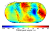

geoid

Definition: The geoid ( JEE-oyd) is the shape that the ocean surface would take under the influence of the gravity of Earth, including gravitational attraction and Earth's rotation, if other influences such as winds and tides were absent. This surface is extended through the continents (such as might be approximated with very narrow hypothetical canals). According to Gauss, who first described it, it is the "mathematical figure of the Earth", a smooth but irregular surface whose shape results from the uneven distribution of mass within and on the surface of Earth. It can be known only through extensive gravitational measurements and calculations. Despite being an important concept for almost 200 years in the history of geodesy and geophysics, it has been defined to high precision only since advances in satellite geodesy in the late 20th century.
Source: Wikipedia
Wikipedia Page (Something wrong with this association? Let us know.)
Wikidata Page (Something wrong with this association? Let us know.)